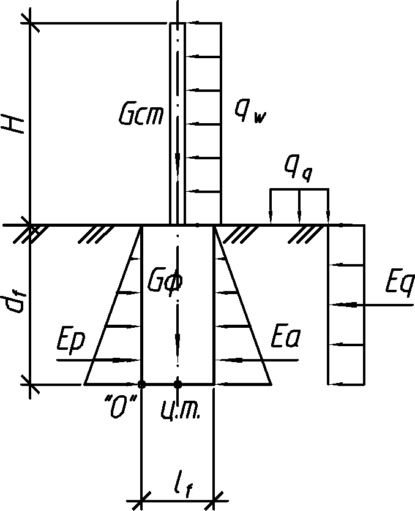

Активная строна
Ветровое давление we, т/м2
Равнодействующая от ветрового давления Fw, т
Временная нагрузка q, т/м2
Равнодействующая горизонтального давления от временной нагрузки Eq, т
Активное давление грунта σa, т/м2
Равнодействующая активного давления грунта Ea, т
Сумма сдвигающих сил ΣFs.h, т
Момент опрокидывающих сил Mext, т·м
Схема загружения

Пассивная сторона
Масса опоры Gs, т
Масса фундамента Gf, т
Пассивное давление грунта σp, т/м2
Равнодействующая пассивного давления грунта Ep, т
Сумма удерживающих сил ΣFs.p, т
Момент удерживающих сил Mint, т·м
Грунт в основании фундамента
Песок
Результаты
Коэффициент запаса устойчивости против сдвига
Коэффициент запаса устойчивости против опрокидывания
Расчет по деформациям основания